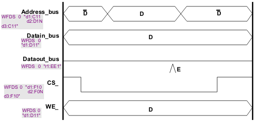
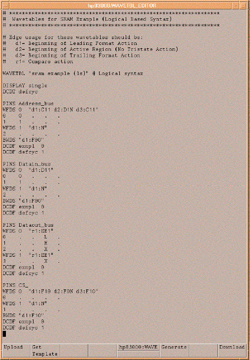

Logical syntax
This syntax defines the waveform using a two level abstraction to describe the actions that will be programmed into timing hardware tables of each channel. The first level of abstraction uses logical actions to describe the actions that are programmed on each edge of the waveform. The command for this is denoted as a waveform definition string (WFDS). In the syntax for logical actions there are two types of actions, fixed actions and parameter actions. A fixed action defined on an edge causes a specific action to occur, such as drive a logic 1 or compare for a logic low. On the other hand, a parameter action specifies a set of actions that could occur on the edge. The action to be selected from the set could be different on every cycle and is determined by the APG program on a cycle-by-cycle basis.
In Figure 46, the Address_bus, Datain_bus, Dataout_bus and WE_ waveforms use parameter actions; the CS_ waveform uses fixed actions. The WFDS syntax also includes an index (Lwfindex indexed 0 through 31). The syntax for the WFDS command is:
WFDS {Lwfindex} {"Logical Waveform Definition String"}
Example:
WFDS 0 "d1:F10 d2:D11 d3:FNZ r1:EE1"
Logical fixed actions
Code |
Drive action |
Tri-state action |
|---|---|---|
|
|
|
N |
no action |
no action |
F0N |
0 |
no action |
F1N |
1 |
no action |
FN0 |
no action |
off |
FNZ |
no action |
on |
F00 |
0 |
off |
F0Z |
0 |
on |
F10 |
1 |
off |
F1Z |
1 |
on |
Code |
Action |
|---|---|
N |
no action |
E0 |
edge compare to 0 |
E1 |
edge compare to 1 |
EI |
edge compare to intermediate |
EX |
edge compare to mask |
EU |
edge compare to unstable |
C |
capture digital data (selective digital capture) |
D |
do not capture digital data (selective digital capture) |
W0 |
window open with compare to 0 |
W1 |
window open with compare to 1 |
WI |
window open with compare to intermediate |
WX |
window open with compare to mask |
WU |
window open with compare to unstable |
WC |
window close |
Logical parameter actions
Code |
Drive action |
Tri-state action |
|---|---|---|
D1N |
drive parameter 1 (DD1) |
no action |
D2N |
drive parameter 2 (DD2) |
no action |
C1N |
drive complement of parameter 1 (DD1) |
no action |
C2N |
drive complement of parameter 2 (DD2) |
no action |
DN1 |
no action |
tri-state parameter 1 (DD1) |
DN2 |
no action |
tri-state parameter 2 (DD2) |
D11 |
drive parameter 1 (DD1) |
tri-state parameter 1 (DD1) |
C11 |
drive complement of parameter 1 (DD1) |
tri-state parameter 1 (DD1) |
D22 |
drive parameter 2 (DD2) |
tri-state parameter 2 (DD2) |
C22 |
drive complement of parameter 2 (DD2) |
tri-state parameter 2 (DD2) |
Code |
Action |
|---|---|
EE1 |
edge compare to parameter 1 (ED1) |
EE2 |
edge compare to parameter 2 (ED2) |
WE1 |
window open with compare to parameter 1 (ED1) |
WE2 |
window open with compare to parameter 2 (ED2) |
Using this syntax, the following code will provide the logical waveform definitions for the example.
Examples
Coded waveform
PINS Address_bus WFDS 0 "d1:C11 d2:D1N d3:C11" PINS Datain_bus WFDS 0 "d1:D11" PINS Dataout_bus WFDS 0 "r1:EE1" PINS CS_ WFDS 0 "d1:F10 d2:F0N d3:F10" PINS WE_ WFDS 0 "d1:D11"

As mentioned in the beginning of this discussion, the logical syntax describes the waveform with a two level abstraction. The second and lowest level of the abstraction is the definition of the physical waveforms associated with the logical waveform definitions. The logical waveform definition is a virtual description of the waveform as there is no part of the timing hardware that is analogous to the logical waveform. Only physical waveforms can be defined in the hardware. When the memory pattern is generated, the logical waveform is translated to one or more physical waveforms. The logical syntax supports this concept by allowing a physical waveform to be defined for all of the combinations of each logical parameter used in the logical waveform description. To support this level of abstraction the syntax uses the WAVE command. One or more WAVE commands must follow each WFDS command.
WFDS {Lwfindex} {"Logical Waveform Definition String"}
{Pwfindex} {D1 action} {D2 action} {E1 action} {E2 action}
<- WAVE CommandExample:
WFDS 0 "d1:f1N d2:D11 d3:FNZ r1:EE1" 0 0 . X . 1 0 . L . 2 0 . H . 3 1 . X . 4 1 . L . 5 1 . E .
(The columns are pwf#, D1, D2, E1, and E2, respectively.)
In the example above the character 0, 1, L, H, and X are used. These characters are aliases for fixed actions.
0 = F00 1 = F10 Z = FNZ L = E0 H = E1 X = EX
Either fixed actions or the aliases may be used in the WAVE commands. So an alternate equivalent solution for the example above would be:
WFDS 0 "d1:F1N d2:D11 d3:FNZ r1:EE1" 0 F00 . EX . 1 F00 . E0 . 2 F00 . E1 . 3 F10 . EX . 4 F10 . E0 . 5 F10 . E1 .
For every logical waveform defined, one WAVE command must be given for every possible combination of the logical parameters defined in the WFDS command. Each WAVE command creates a corresponding entry in the physical waveform table.
Note that a logical waveform with just fixed logical parameters requires only one WAVE command with all of the logical parameters denoted as empty with ".".
WFDS 1 "d1:F1N d3:F00" 6 . . . .
Tri-state considerations in the logical waveform definition
As mentioned previously, only drive edges d1, d3, d4 and d6 are capable of changing the tri-state condition of the driver. Therefore, when an edge is used that does not have tri-state capability, the logical syntax used must reflect this. In other words: Do not try to request a tri-state condition on edges d2, d5, d7 and d8. For instance, the following would not be a legal definition because drive edge 2 has been specified and a change in the tri-state condition has been defined in the second digit of D11, F00 and F10.
WFDS 1 "d2:D11" 0 F00 . . . 1 F10 . . .
The correct syntax uses a "no action" (N) selection for the tri-state specifier:
WFDS 1 "d2:D1N" 0 F0N . . . 1 F1N . . .
BWDS example
BWDS "d1:F00"
Note the following:
- Only logical fixed actions can be used in a break waveform definition.
- The break waveform only needs to be defined for pins that have been defined as an "i" or "io".
- If a BWDS command is not given, the channel will continue to drive whatever the last action of the pattern was.
There are also two more details that are needed to complete a wavetable definition, the DISPLAY definition and the Default device cycle definition (DCDT). These definitions apply to all of the pins in the wavetable.
- The DISPLAY syntax is used to define which device cycle mode the vector window will be in when a test label which uses the wavetable is displayed in the Vector Setup window. The mode can be classic, single or multi.
The default device cycle definition is required by the APG window or if you intend to work in the vector setup with the Display Mode Multi.
To generate a default device cycle, follow the procedures for generating a normal device cycle. You must however observe the following conditions:
- The default device cycle must be defined for all pins.
- It must have a length of 1 test system cycle.
You can also use the default device cycle as a normal device cycle.
The figure below shows the logical Wavetable definition for the example waveforms used at the beginning of this section.
